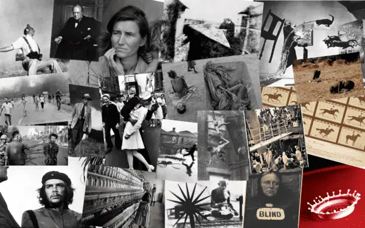

Seguro que en tu mente recuerdas algún momento especial del que te hubiese gustado tener una fotografía, algún recuerdo de alguna persona que ya no esta, algún momento familiar, con amigos, pareja, viajes, etc., pero por alguna circunstancia te dio pena sacar el teléfono, o te dio flojera o simplemente no lo pensaste en el momento o tal vez no tenias telefon y ahora ese recuerdo solo vive en tu memoria, pues nos ha pasado ha muchas personas, pero preguntando a mis familiares me dicen que en su época no había esa tecnología y que si, hubiesen deseado tener fotos de sus tiempos, y que ahora que la tecnología ha avanzado tomar fotos es un gran recuerdo, incluso si ya no estamos, seguro que alguien vera nuestras fotografías y vivirá con nosotros aquellos recuerdos a través de una foto, asi que si no te gustan las fotos te invito a que lo hagas mas seguido, te prometo que cuando estes viejito amaras verlas y revivir momentos de tu "época"
Mi nombre es Arytzy Keren e hice este blog, tomando de inspiración los memorables recuerdos que guardan las fotos y que de alguna manera te inspiren a ti a guardar recuerdos a traves de fotos, gracias por leer.